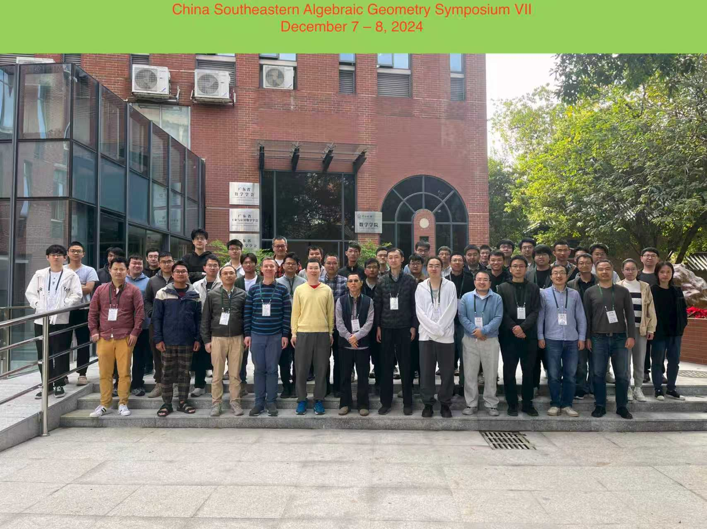

| Home | Schedule | Directions | Flyer |
To promote the development of algebraic geometry and related fields in Southeast China, Sun Yat-sen University will host the China Southeast Geometry Symposium VII at its South Campus on December 7–8, 2024. The conference will bring together experts and young scholars to exchange recent advances in the field. The short course will be devoted to the topic of Bridgeland stability.
Venue: Bldg 266, Room 415, No. 135 Xingang Xi Road, Haizhu District, Guangzhou 510275, Guangdong
Junpeng Jiao Tsinghua University
Vladimir Lazić Universität des Saarlandes
Chunyi Li The University of Warwick
Wenfei Liu Xiamen University
Zhiyu Liu Zhejiang University
Sheng Rao Wuhan University
Hao Sun Shanghai Normal University
Jianxun Hu, Changzheng Li, Lei Song
School of Mathematics, Sun Yat-sen University
There is no registration fee. Accommodation and meals will be covered by the local organizers for confirmed participants.
Lei Song: songlei3@mail.sysu.edu.cn
Jinyu Yu: yujinyun@mail.sysu.edu.cn
National Natural Science Foundation of China
National Key R&D Program of China
Guangzhou Municipal Science and Technology Bureau
